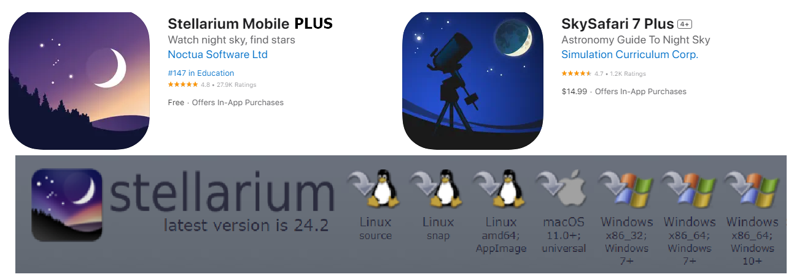
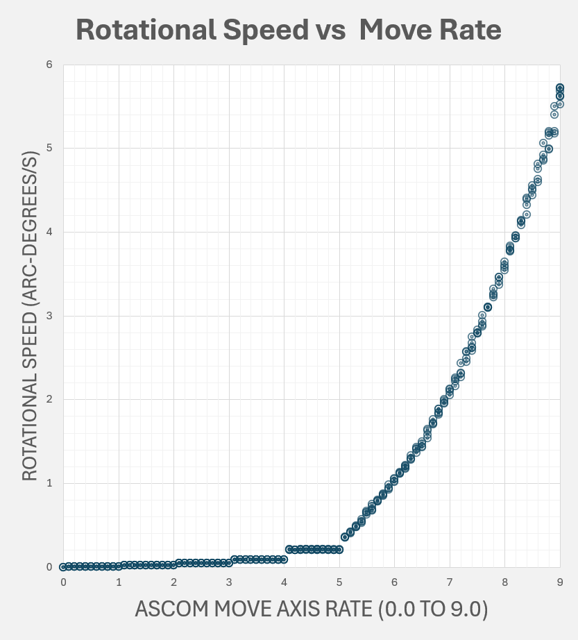

Using Stellarium and Sky Safari Pro¶
Applications Supported | Stellarium Mobile | Stellarium Desktop | Sky Safari Pro | Aiming Accuracy
Telescope Control Compatibility¶
The Alpaca Benro Polaris Driver supports both the ASCOM Alpaca API and SynScan protocol. This opens up a wide range of Telescope Control applications now compatible with the Benro Polaris. Out of all those listed, we recommend Stellarium PLUS and Stellarium Desktop.

Supported and Tested¶
- Stellariium Mobile PLUS (IOS, Android) - paid, telescope control via SynScan protocol.
- Stellarium Desktop (Win) - free, telescope control via Alpaca ASCOM
- Stellarium Desktop (MacOS, Linux) - free, telescope control via a binary protocol
- Sky Safari 7 Plus and Pro - paid, telescope control via Alpaca
- Nina (Win) - free, telescope control via Alpaca
- CCDciel (MacOS) - free, telescope control via Alpaca
Not supported¶
- Stellariium Web - free, no telescope control
- Stellarium Mobile (IOS, Android) - free, no telescope control
- Sky Safari 7 Basic - free, no telescope control
- Skyportal - Celestron’s free version of Skysafari
- SynScan App and SynScan Pro App - Not currently supported
Stellarium - Video Demonstration¶
You can view a demonstration of parts of this documentation in the following YouTube Video.

1. Using Stellarium Mobile PLUS¶
Stellarium Mobile PLUS is ideal for use on a tablet or mobile phone, either Android or IOS. It includes more features than the free Stellarium Web and the free Stellarium Mobile offerings.
Connecting to the Driver¶
Stellarium Plus connects to the driver over the network using SynScan protocol. It is the most straightforward setup; you only need to do this once. To connect Stellarium PLUS:
- Select the Hamburger menu from the top left
- Select Observing Tools > Telescope Control
- Toggle it off/ and on to bring up the popup at the bottom left
- In the Host field, enter the IP Address of the ABP Driver.
- In the Port field, leave a default of 10001.
- Click the Link toggle to start the connection.
- Stellarium will attempt to connect to the driver.
- Choose Sync Location (Stellarium site alt/az will be sent to the driver)
- Choose Sync Time (Stellariam will send its time to the driver)
A Yellow Not Aligned flag indicates that the driver has not completed initializing its communications with the Benro Polaris and may still be out of alignment.
Goto Co-ordinates¶
Commanding the Benro Polaris to move is as simple as Selecting the Target Object and clicking the Goto Icon. The icon will flash red while the mount is slewing and re-establishing sidereal tracking.
Changing Field of View¶
As the telescope sweeps across the sky, you will see a reticule marking its path. You can tailor the size of the reticule to match your camera and lens setup, allowing you to visualize your framing easily.
If you lose sight of where the mount is pointing in Stellarium, simply click this second icon, and the view will immediately pan to your reticle.
Move Axis Commands¶
The third icon on the Telescope Popup allows you to move the primary and secondary axes of the Benro Polaris. The Driver supports move commands on the third (Astro) axis of the Benro Polaris, but we have not found any applications that support the third axis at this stage.
Speeds 1 to 5 match the slow Move Axis speeds of the Polaris. Speeds 6 to 9 map to a variable faster speed ranging from 1 to 2000 units. The table below gives you an approximate speed for each value.

| Rate | Rotational Speed |
|---|---|
| 1 | 21.5 arcsec/s |
| 2 | 1.1 arcmin/s |
| 3 | 2.8 arcmin/s |
| 4 | 5.3 arcmin/s |
| 5 | 12.5 arcmin/s |
| 6 | 1.0 degree/s |
| 7 | 2.0 arcdeg/s |
| 8 | 3.6 degree/s |
| 9 | 5.5 degree/s |
Note that Move Axis in Nina allows you to enter fractional speeds. Due to Benro Polaris, these only have effect from 5.1 to 9.0 (i.e., for the Benro Polaris Fast Move commands).
The Driver also implements Equatorial rotation move around the RA and Dec Axes. By setting the Rate to a decimal value between 1 and 2, you can control how far the driver will rotate on the next axis move call. A rate of 1.30 on the primary axis will move the Right Ascention axis 30°. A rate of -1.15 on the secondary axis will move the Declination axis -15°.
Sync Co-ordinates¶
You can help improve the aim of the Benro Polaris by Syncing with a known object in the sky.
- Using the Move Axis controls, aim the telescope with the known object in the center of the eyepiece or image.
- Find the known object in Stellarium and select it.
- Tap the Sync icon on the Telescope Control Popup.
- The Reticle should immediately shift to your selected target.
- This amount will now offset all RA/Dec coordinates sent and received from Polaris.
To reset the RA/Dec Offset, simply tap the disconnect and reconnect icons on the Telescope Control Popup in Stellarium. For a better understanding of how this works, refer to Section 3 below.
2. Using Stellarium Desktop¶
Stellarium Desktop has the broadest set of features of all versions of Stellarium. It is flexible, allowing you to customize what is shown (deep sky objects, satellites, meteor showers, planets, etc.) and how it is revealed (annotations, projections, landscapes, etc.), including numerous sky surveys.
It includes an extensive What's Up Tonight tool for planning imaging targets. It also includes an extensive library of plug-ins that add more functionality to the application. It's a very powerful platform.
Connecting to the Driver on MacOS/Linux¶
Stellarium Desktop on MacOS and Linux does not support native Alpaca or ASCOM. We have implemented a simple External Software Binary Protocol that only allows GOTO functionality. You can add an External Software Telescope by using the following procedure:
- Select the
Plug-instab on the Configuration Dialog menu bar. - Scroll down the list of plugins and find the
Telescope Control plugin. - Check
Load at startupon the Telescope Control Dialog. - Close Stellarium and Restart Stellarium from the Desktop.
- Press
Ctrl+0(Windows) orCommand+0(MacOS) to open the Slew Telescope Dialog - Click the
Configure Telescopesbutton at the bottom of this dialog. - Click on the
Add Telescopebutton (3rd one at the bottom of the Telescope Control Configure dialog). - Choose Telescope controlled by
External software or a remote computerand enterBenro Polarisinto the Name field. - In the Host field, enter the IP Address of the ABP Driver.
- In the TCP Port field, leave a default of 10001.
- Click OK
Connecting to the Driver on Windows¶
Unfortunately, Stellarium Desktop does not include native Alpaca support. You must install the ASCOM Platform if you haven't already done so. After the ASCOM platform has been installed, you can add an ASCOM Telescope by using the following procedure:
- Select the
Plug-instab on the Configuration Dialog menu bar. - Scroll down the list of plugins and find the
Telescope Control plugin. - Optionally, if you want to always use the ABP telescope, check
Load at startupon the Telescope Control Dialog. To browse Stellarium without Polaris, leave it unchecked, and just connect on demand from theCtrl+0(Windows) orCommand+0(MacOS) dialog. - Close Stellarium and Restart Stellarium from the Desktop.
- Press
Ctrl+0(Windows) orCommand+0(MacOS) to open the Slew Telescope Dialog - Click the
Configure Telescopesbutton at the bottom of this dialog. - Click on the
Add Telescopebutton (3rd one at the bottom of the Telescope Control Configure dialog). - Choose Telescope controlled by
ASCOMand enterBenro Polarisinto the Name field. - Leave the Coordinate System as
J2000 (default), - Check
Start/Connect on Startup. - Scroll down to the ASCOM Settings.
- Click
Choose ASCOM Telescope - Click the
Alpacatab on the ASCOM Telescope Chooser dialog box. - Click
Enable Discoveryfrom the Alpaca tab - Click
Discover Nowfrom the Alpaca tab - For a local APB, Choose
Benro Polarisfrom the drop down-menu, then clickOK. - For a remote APB, Click
Create Alpaca Driver (Admin)from the drop-down. a. ClickYesfor User Account Control. b. Enter the nameBenro Polaris, then clickOK. c. ClickPropertieson the ASCOM Telescope Chooser dialog box. d. Change the Remote Device Host Name/IP address (127.0.0.1when running ABP on same machine as Stellarium, otherwise enter the IP address of the machine running ABP (dont use192.168.0.x). e. Change the Alpaca Port to5555. f. ClickOK. - Click
OKon ASCOM Telescope chooser dialog. - Click
OKon Add a New Telescope dialog. - Click
Connectand close the Telescopes dialog. - You have now added the Benro Polaris telescope and connected it.
Goto Co-ordinates¶
Commanding the Benro Polaris to move is as simple as Selecting the Target Object and pressing Ctrl+1 (Windows) or Command+1 (MacOS).
You can also bring up the Slew Telescope To dialog by pressing Ctrl+0 (Windows) or Command+0 (MacOS). This dialog allows:
- Manually enter the co-ordinates
- Select the Current Object
- Select the Center of the Screen
- Select from a customisable list of Targets
- Initiate the Slew of the Benro Polaris.
Changing Field of View¶
Stellarium Desktop can be used to display the sky in Alt/Az (topocentric), RA/Dec (equatorial), or with the Galactic longitude/latitude grid overlaid. This allows the Stellarium view to be compared with the corresponding reference-frame modes of the Alpaca Pilot. If you lose site of your selected target, press SPACE, and the window will immediately pan to your selected object.
1. Alt/Az — Topocentric view¶
By default, Stellarium uses an azimuthal (Alt/Az) mount mode, which corresponds to the local, topocentric view of the sky. Dragging the screen horizontally adjusts Azimuth, while dragging it vertically adjusts Altitude.
To display the Alt/Az grid:
- Press Z to switch the Azimuthal Grid on and off.
2. RA/Dec — Equatorial view¶
To change Stellarium to an equatorial (RA/Dec) mount mode.
- Press Ctrl+M to switch between horizontal (Alt/Az) and equatorial (RA/Dec) mount modes.
- Press E to switch the Equatorial Grid on and off
The equatorial grid is aligned with Right Ascension and Declination, with the celestial poles fixed in the view. When in equatorial (RA/Dec) mount mode dragging the screen horizontally adjusts Right Ascension, while dragging it vertically adjusts Declination.
3. Galactic longitude/latitude view¶
Galactic mode is available through Stellarium's script console.
- Press F12 to open the Script Console.
- Enter and execute the following command:
This switches Stellarium to the Galactic (Glat/Glon) mount mode, removes the normal horizon-based view, changes the orientation, and displays the Galactic grid. While in this mode, dragging the screen horizontally adjusts galactic longitude, while dragging it vertically adjusts the galactic latitude. For better visual comparison with the Milky Way, the Milky Way brightness can be increased under F4 → Sky.
To restore Stellarium to its normal default state:
- Press F12.
-
Enter and execute the following command:
-
Press G to switch the ground on and off
- Press A to switch the atmosphere on and off
- Press Q to switch Cardinal Points on and off
- Press Shift + Q to switch Compass Marks on and off
This restores the standard natural view, including the Alt/Az orientation, horizon, landscape and normal display settings.
Using a Custom Landscape and Horizon Image¶
Stellarium Desktop allows you to create a custom Landscape to match your own observation site, including the image of the horizon overlaid into Stellarium.
To create your own custom Landscape:
- Create a 4096 x 2048 pixel image of your location's 360 degree horizon
- If you have an Insta360 X3 camera, take a 360 Photo from your tripod, with the screen facing. Open the image in Insta360Studio, change to a 2:1 FOV Ratio, and export the image.
- Take multiple images with a wide angle lens. Use Photoshop to merge the images into a 2:1 ratio image with the horizon in the middle and the 360 degrees spanning the width of the image.
- Use Photoshop to edit the 4096 x 2048 pixel image and convert the background into a single layer. Select the Sky, modify the selection shrinking it 15 pixels, feathering it 15 pixels, then deleting the sky selection. Save the image as a transparent png called
horizon.png. -
Create a file called
location.iniwith the following contents, setting the name, latitude, longitude, altitude and timezone correctly.
-
Using Windows Explorer, select both files
location.iniandhorizon.png, then Right Click and select Compress To... Zip File. - Using Stellarium, open the 'Sky and viewing options' window by clicking F4, select the Landscape tab, click the Add/remote Landscapes button, then install the zip file you just created.
- Check the orientation of the image in Stellarium. You may need to fine tune the
angle_rotatezvalue to correctly align the image with reality. - You can now align your Benro Polaris during the day by syncing with a known spot in the horizon image.
Pulling Stellarium Desktop Targets into Nina¶
You can use the Stellarium Desktop Remote Control Plug-in to further integrate Stellarium with Nina. Using this plug-in, Nina can pull any selected Stellarium Target into the Framing Tab on Nina.
To setup this integration:
- Using Stellarium
- Press
F2to callup the Configuration Dialog and navigate to the Plug-ins tab - Scroll down to Remote Control Plug-in and enable Load at startup.
- Restart Stellarium navigate back to its Configuration Dialog.
- Enable the Server and Enable the Server on Startup.
- Restart Stellarium
- Press
- Using Nina
- Navigate to the Options/Equipment tab
- Under the Planetarium, select Stellarium
- Enter the Host IP address of
localhostor its remote IP address.
Now on the Framing tab you can click on a small pin icon next to the Coordinates Heading and Nina will ask Stellarium for the currently selected Target Co-ordinates. Much better than Nina's Sky Atlas.
Sync Co-ordinates¶
On Windows, you can help improve the aim of the Benro Polaris by Syncing with a known object in the sky.
- Using the Benro Polaris App, aim the telescope with the known object in the center of the eyepiece or image
- Find the know object in Stellarium Desktop and select it.
- Press
Ctrl+0(Windows) orCommand+0(MacOS) to bring up theSlew Telescope Todialog and clickSync. - The Reticle should imediately shift to your selected target
- This amount will now offset all RA/Dec coordinates sent and received from Polaris.
To reset the RA/Dec Offset, restart the driver. Refer to Section 3 below for a better understanding of how this works.